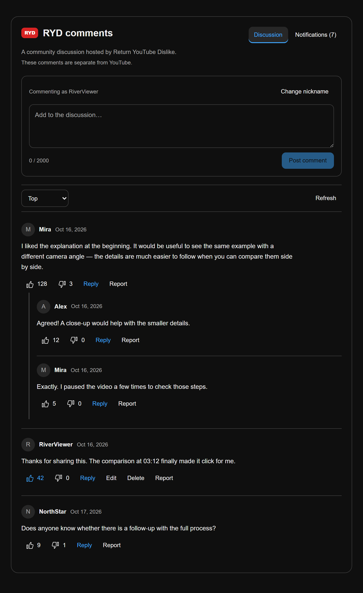
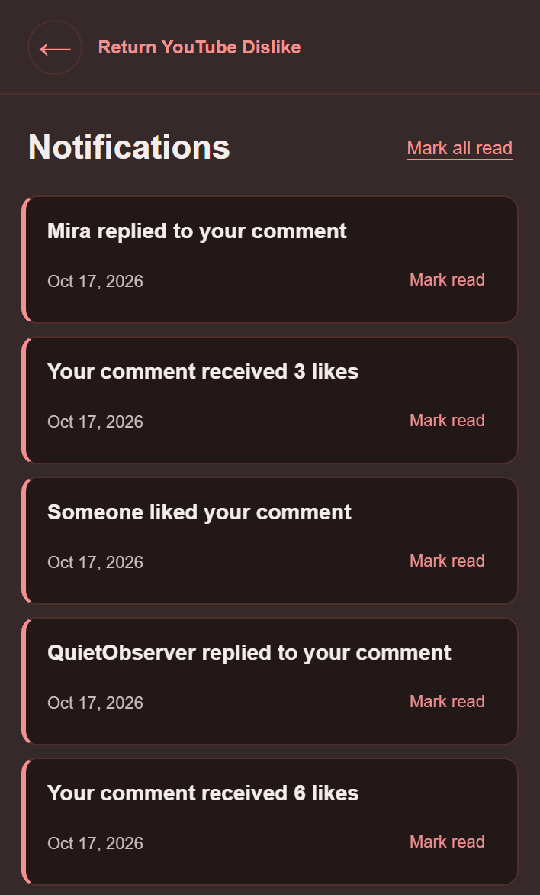
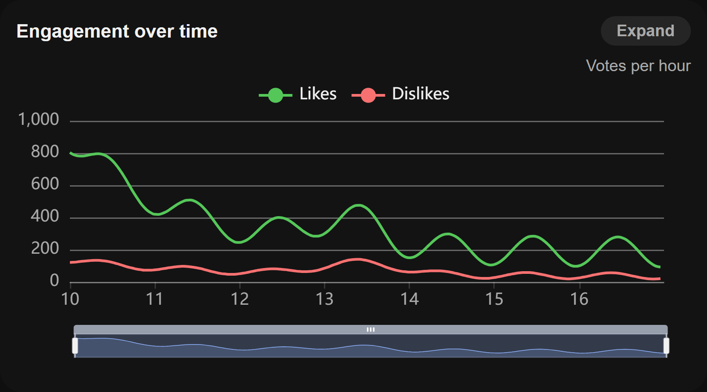
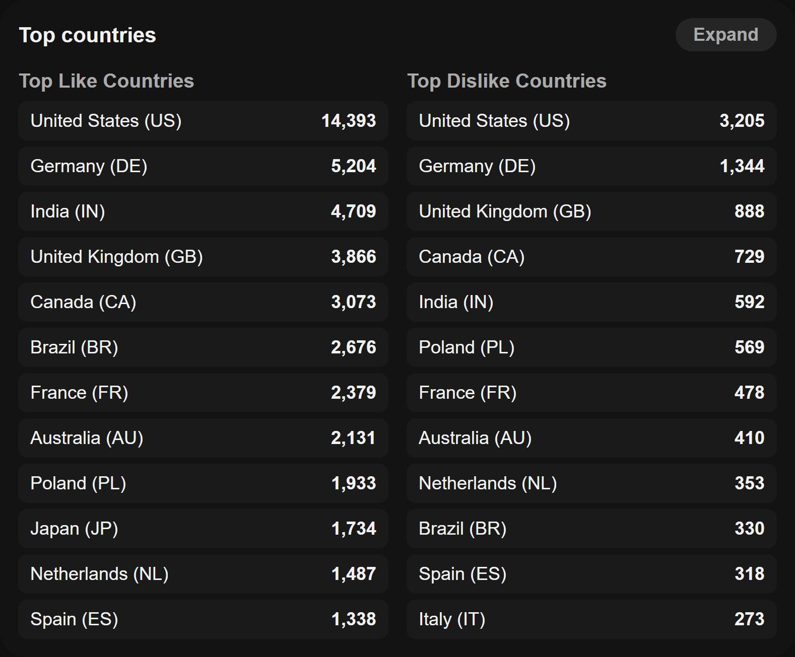
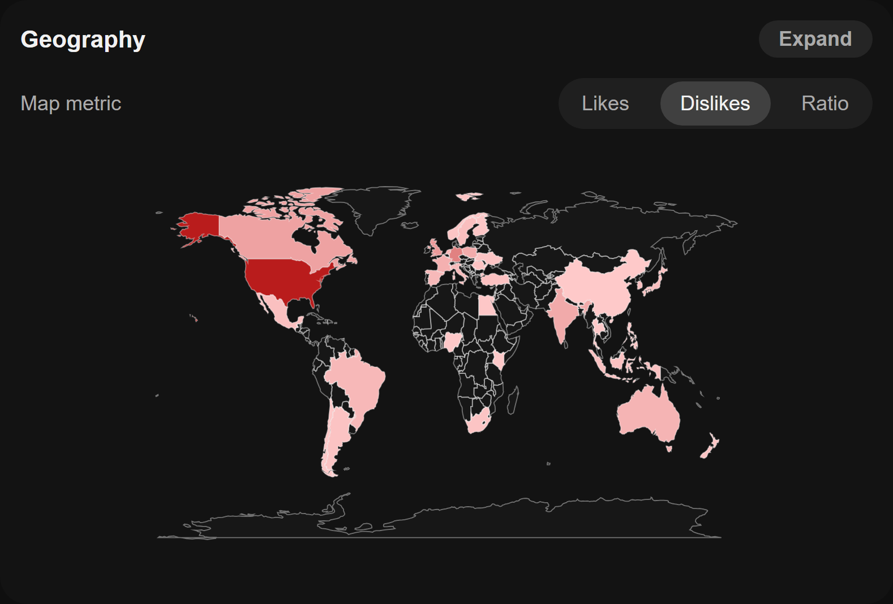
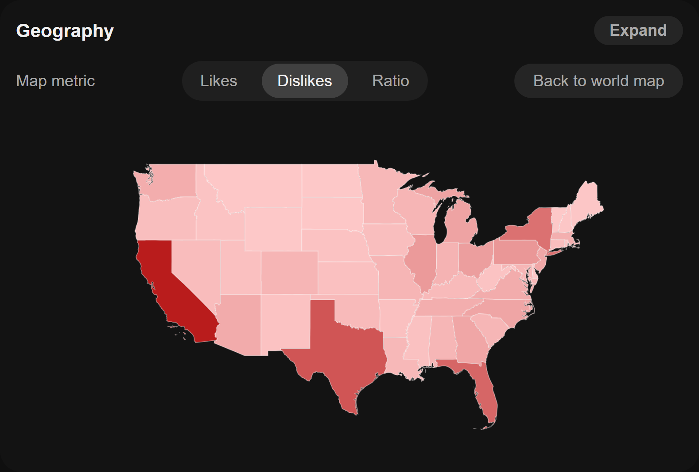

__MSG_changelog_hero_eyebrow__
__MSG_changelog_hero_title__
__MSG_changelog_hero_body__
__MSG_changelog_comments_title__
__MSG_changelog_comments_body__
- __MSG_changelog_comments_point_replies__
- __MSG_changelog_comments_point_nickname__
- __MSG_changelog_comments_point_notifications__
- __MSG_changelog_comments_point_moderation__
__MSG_changelog_sample_note__


__MSG_changelog_analytics_title__
__MSG_changelog_analytics_body__




__MSG_changelog_sample_note__
__MSG_changelog_join_title__
__MSG_changelog_join_free__
- __MSG_changelog_join_step1__
- __MSG_changelog_upgrade_step1__
- __MSG_changelog_join_step3__
__MSG_changelog_also_title__
- __MSG_changelog_also_counts__
- __MSG_changelog_also_consent__
- __MSG_changelog_also_translations__
__MSG_changelog_support_heading__
__MSG_changelog_support_description__